First light
The cove is yours before the day is.
Swim off the lower terrace while the water is still glass. Coffee is waiting on the rocks when you climb out.
Fourteen suites · One private cove
A house on the cliff, built for people who have run out of reasons to hurry.
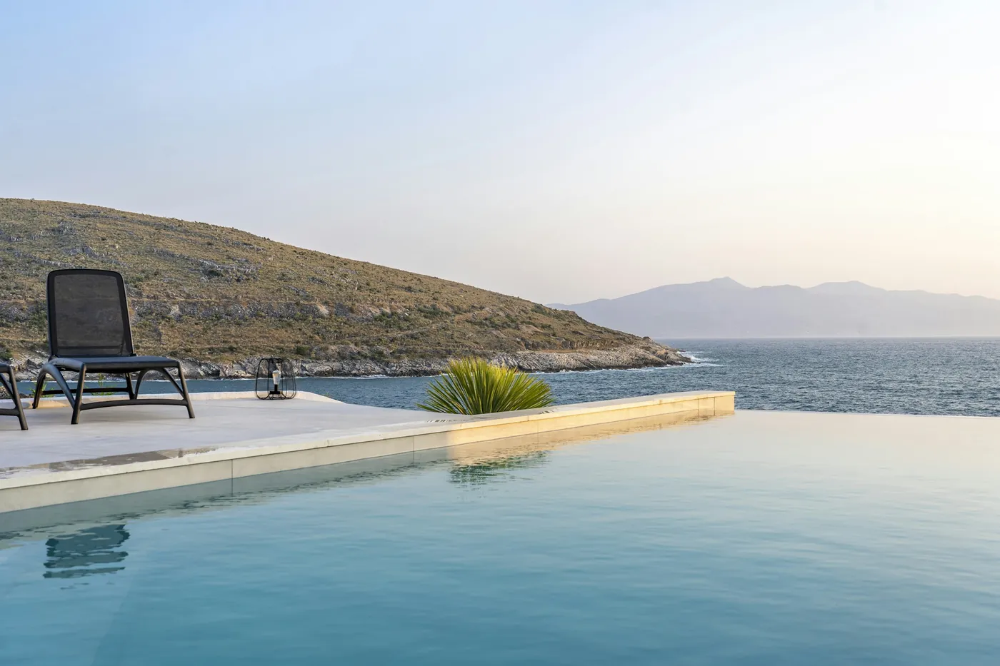
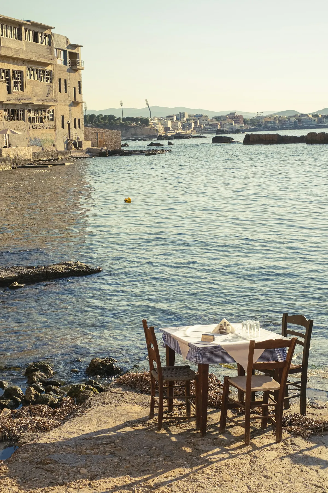
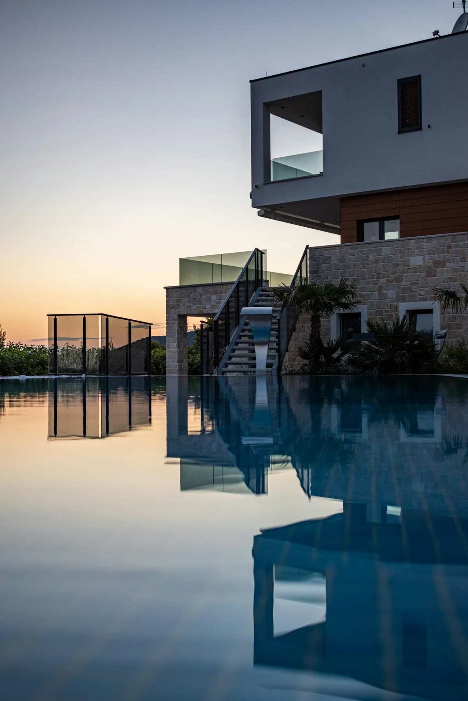
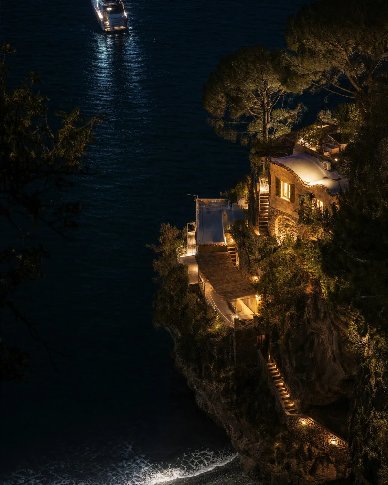
First light
Swim off the lower terrace while the water is still glass. Coffee is waiting on the rocks when you climb out.
The long lunch
Grilled catch, cold wine from the next hillside, and a table that nobody will ask you to give back.
Golden hour
We turned the whole house toward the evening. The bar opens when the cliff turns amber.
The quiet
Lanterns on the path, linen turned down, and the sound of the water three floors below your window.
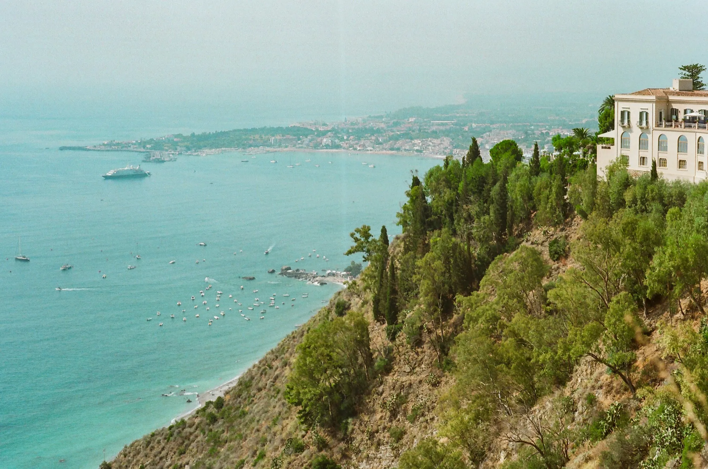
Arrival
Forty minutes by boat from the harbour, or the old road through the pines. Either way, someone is waiting at the gate with something cold.
The House
Solmère was a salt merchant's summer house for two hundred years. We kept the stone, the lemon terraces and the silence, and added only what a perfect week requires.
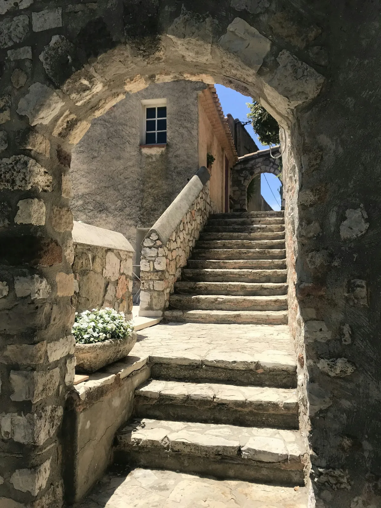
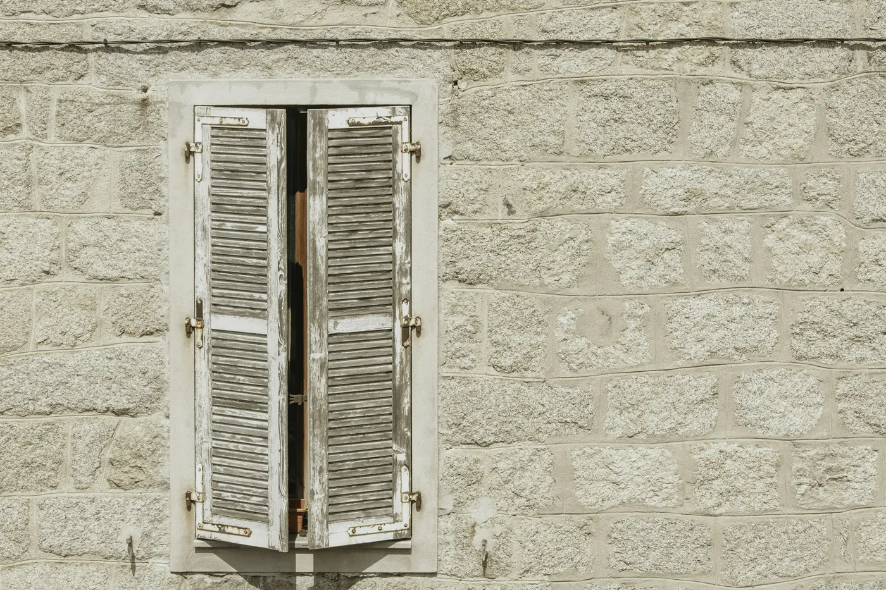
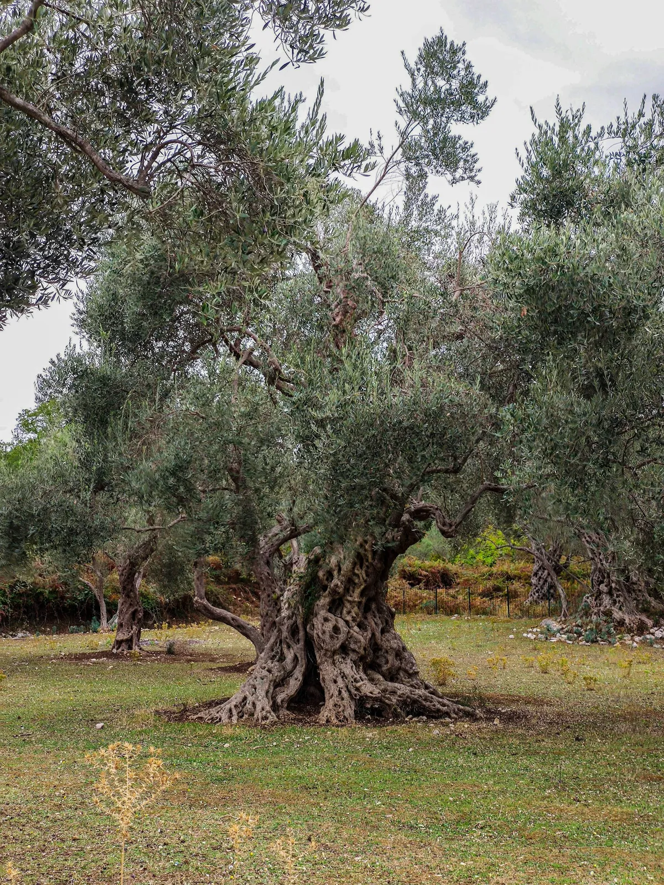
The Suites
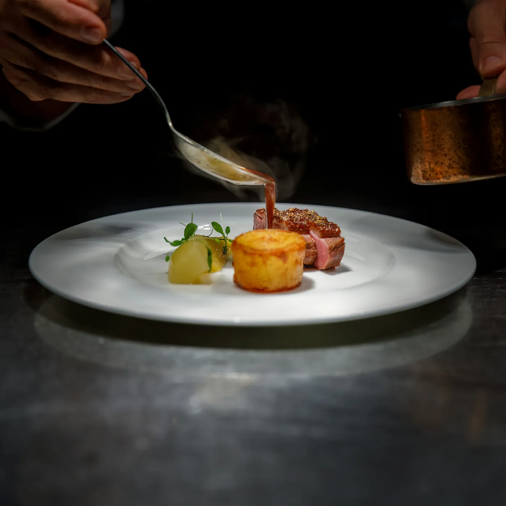
The Table
Chef Inés Varo cooks over olive wood with what the boats and the terraces bring in that morning. There is no menu until four o'clock.
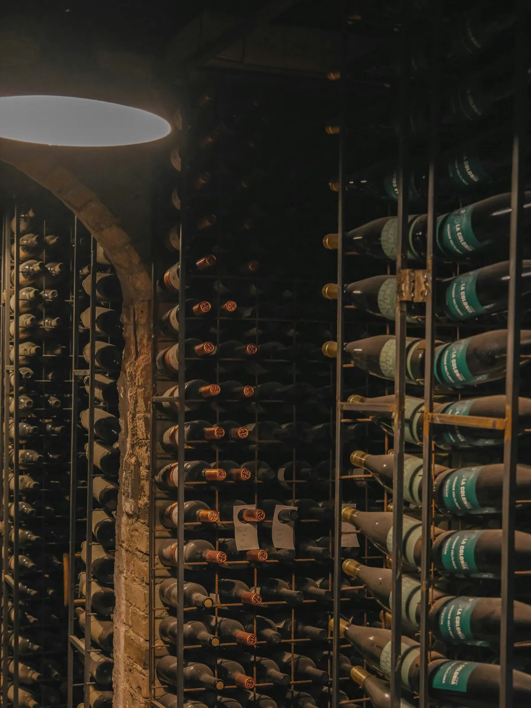
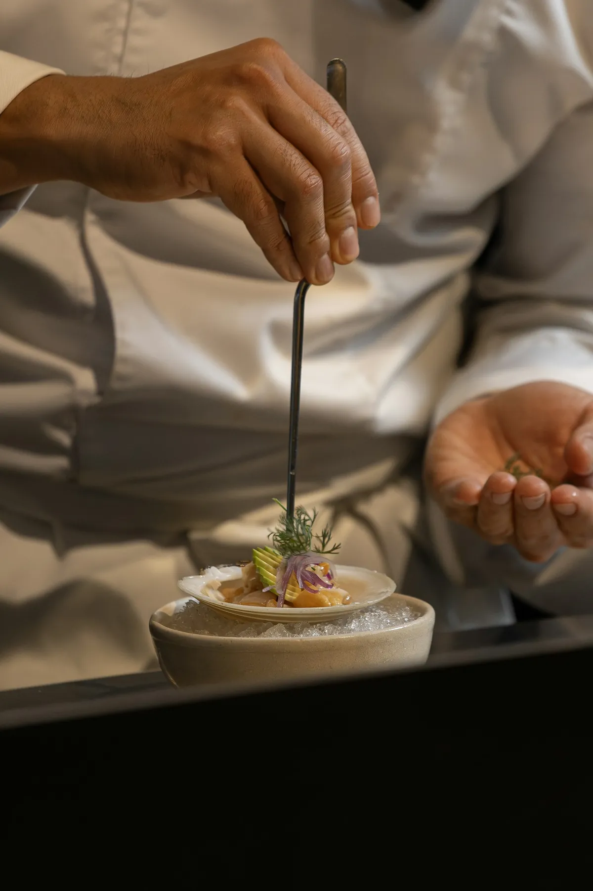
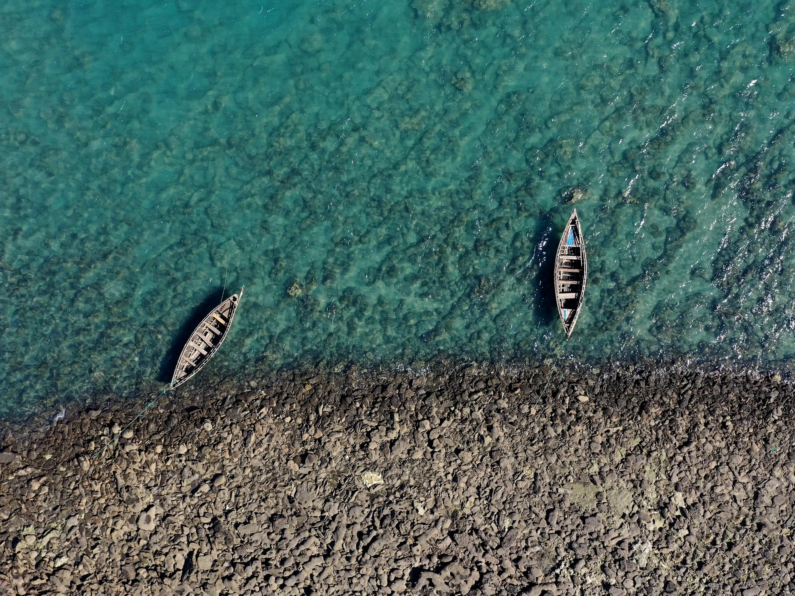
The Cove
The water below the house belongs to our guests. Take a boat out before breakfast, or ask Tomas to row you round the headland for lunch.
Reserve